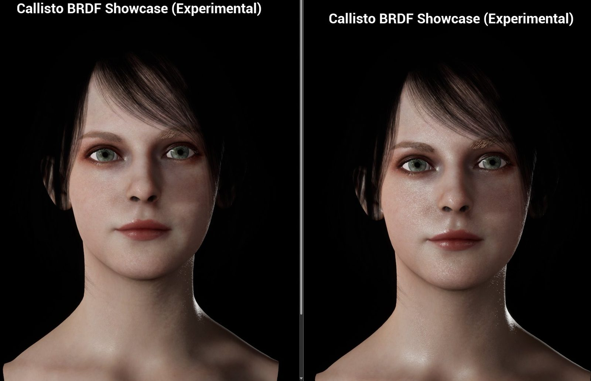
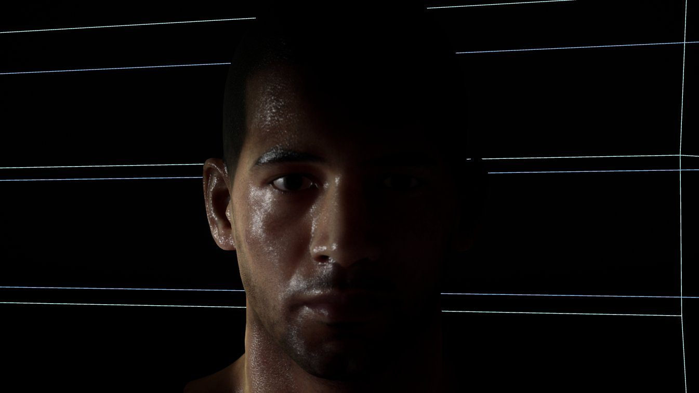

Vite BRDF · Shading
Skin and cloth that hold up at grazing light.
Vite BRDF is a character-grade surface model based on the Callisto BRDF. It replaces the single specular lobe and hard light terminator of the default lit model with the terms that decide whether a face reads as real: dual-lobe specular, a smooth terminator, retroreflection and diffuse Fresnel.
Why it exists
The default lit model is a good general BRDF and a mediocre skin BRDF.
Two artefacts give real-time characters away: a shadow terminator that cuts across curved surfaces too sharply, and surfaces that stay flat where real skin and fibres brighten toward grazing angles. Vite BRDF gives artists direct control over both.

The shading terms
Five controls, each aimed at a specific tell.
Dual-lobe specular
Single- or dual-lobe GGX, so skin can carry both a tight oily highlight and a broad sheen, with a specular Fresnel falloff control.
Smooth terminator
Softens the light terminator across the shadow boundary on curved surfaces, without flattening the overall shading.
Retroreflection
Light returned toward its source, with its own falloff curve, for the back-scatter of skin, dust and fine fibres.
Diffuse Fresnel
Diffuse brightening toward grazing angles, with a falloff control, for skin and fabric without a full subsurface model.
Pay only if used
Behind a compile-time switch. Gating Vite's extra shading models raised a reference scene by 12.3%, so projects that skip it lose nothing.
Production-friendly
Selected per material. No new pins to learn.
Vite BRDF is a shading model, selected per material like any other. Instead of adding inputs, it repurposes existing material pins, which the material editor relabels automatically once the model is selected.
| Opacity | Retroreflection |
|---|---|
| Ambient Occlusion | Retroreflection falloff |
| Anisotropy | Diffuse Fresnel |
| Custom Data 0 | Smooth terminator |
| Custom Data 1 | Diffuse Fresnel falloff |
| Advanced Params node | Specular Fresnel falloff |

VITE_SHADINGMODEL_CALLISTO=1
to enable it. Two character demo projects are available to download.